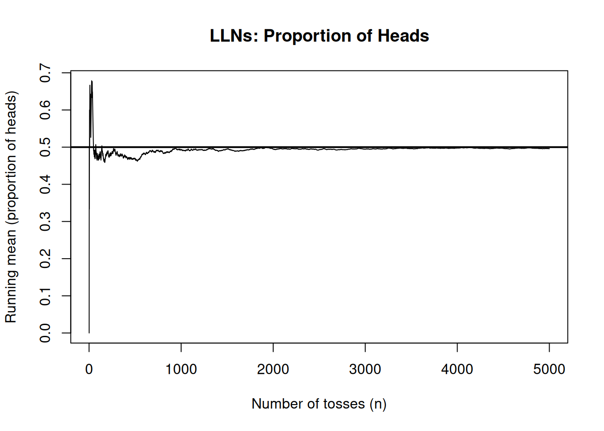
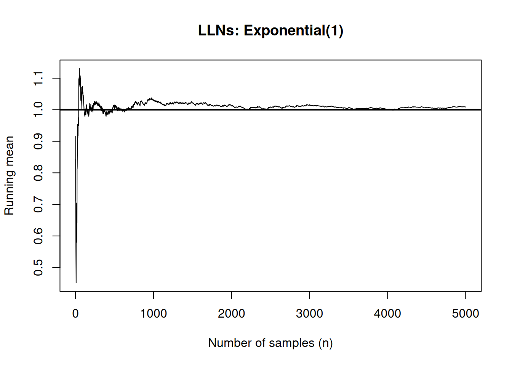
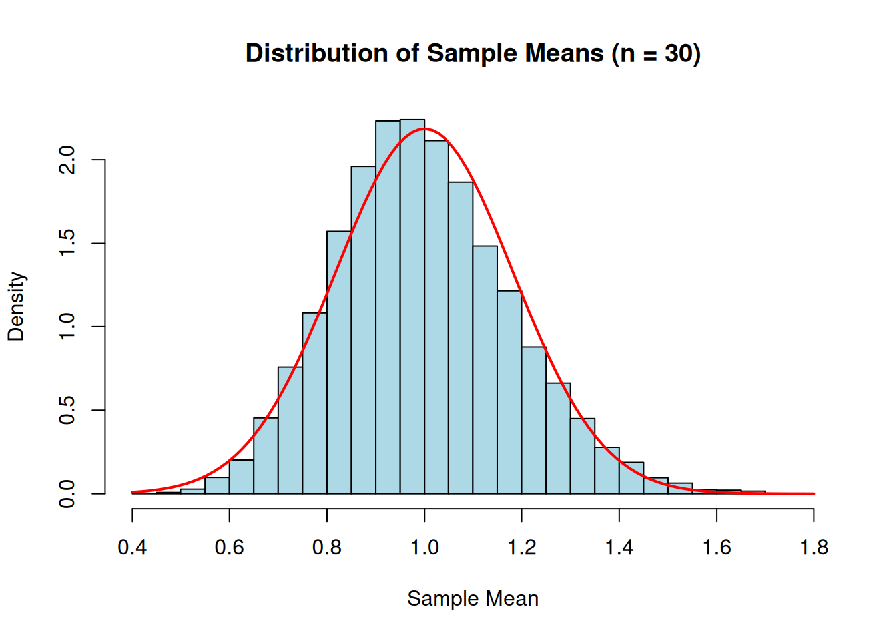

Simulation is grounded in probability theory. When we generate artificial data, compute averages, or estimate probabilities through repetition, we are relying on well-established probabilistic principles. A simulation algorithm may be computational, but its justification is mathematical.
This section revisits the key ideas required for simulation-based reasoning.
2.1 Random Variables
A random variable is a numerical function defined on the outcome of a random experiment. Formally, it is a mapping from a sample space \(\Omega\) to the real numbers. Conceptually, it allows us to translate qualitative randomness into quantitative structure.
If a die is rolled, the outcome is an element of the sample space \(\{1,2,3,4,5,6\}\). Defining \(X\) as “the number shown on the die” converts this outcome into a random variable. Similarly, in a queueing system, we may define random variables representing arrival times, service durations, waiting times, or the number of customers in the system.
In simulation, random variables are the fundamental building blocks. Every stochastic model is constructed by specifying how certain random variables behave and how they interact. Once these variables are generated computationally, the system evolves according to deterministic rules applied to those random inputs.
Random variables are typically classified as either discrete or continuous.
A discrete random variable takes countable values, e.g., the number of arrivals in an hour, the number of failures in a batch, or the number of heads in ten coin tosses.
A continuous random variable takes values in an interval of the real line, e.g., waiting times, lifetimes of components, and measurement errors.
This distinction determines how probabilities and expectations are computed, and it shapes the simulation methods used to generate the variables.
2.2 Probability Distributions (PMF / PDF / CDF)
The behaviour of a random variable is described by its probability distribution.
For a discrete random variable \(X\), the distribution is specified by its probability mass function (PMF),
\[p(x) = P(X = x),\]
which assigns a probability to each possible value. These probabilities must satisfy
\[\sum_x p(x) = 1.\]
For a continuous random variable, the distribution is described by a probability density function (PDF), denoted \(f(x)\), satisfying
Both discrete and continuous random variables can be described using the cumulative distribution function (CDF),
\[F(x) = P(X \le x).\]
For continuous random variables, the CDF is related to the density by
\[F(x) = \int_{-\infty}^{x} f(t)\,dt.\]
The CDF plays a crucial role in simulation. Many simulation techniques, including inverse transform sampling, rely on transforming Uniform(0,1) random variables through the inverse of the CDF to generate draws from more complex distributions.
2.3 Expectation and Variance
One of the primary goals of simulation is to estimate expectations. The expectation, or mean, represents the long-run average value of a random variable.
For a discrete random variable,
\[E[X] = \sum_x x\,p(x).\]
For a continuous random variable,
\[E[X] = \int x\,f(x)\,dx.\]
Expectation is linear. For constants a and b,
\[E[aX + bY] = aE[X] + bE[Y].\]
This property is especially important in simulation when combining random components of a model.
The variance measures the variability of a random variable around its mean:
\[\operatorname{Var}(X) = E[(X - E[X])^2].\]
An equivalent computational formula is
\[\operatorname{Var}(X) = E[X^2] - (E[X])^2.\]
In simulation, variance determines how much Monte Carlo estimates fluctuate across replications and therefore influences how many repetitions are required to achieve stable results.
The theoretical foundation of simulation is the Law of Large Numbers (LLN).
Suppose \(X_1, X_2, \dots, X_n\) are independent and identically distributed random variables with mean \(\mu\). The sample average
\[\bar{X}_n = \frac{1}{n} \sum_{i=1}^n X_i\]
converges to \(\mu\) as \(n \to \infty\).
This result justifies Monte Carlo estimation. When we simulate a system repeatedly and compute the average outcome, we are approximating an expected value. Increasing the number of replications improves the stability of this estimate.
2.4.1 R Examples
Example 1: Demonstrate the LLN with coin tosses
Let
\[X \sim \text{Binomial}(n=1, p=0.5).\]
set.seed(123)x <-rbinom(5000, size =1, prob =0.5) # 1 = Head, 0 = Tailrunning_mean <-cumsum(x) /seq_len(5000)plot(running_mean, type ="l",xlab ="Number of tosses (n)",ylab ="Running mean (proportion of heads)",main ="LLNs: Proportion of Heads", )abline(h =0.5, lwd =2) # true mean

Example 2: Demonstrate the LLN with Exp(1)
Let
\[X \sim \text{Exp}(1).\]
set.seed(123)x <-rexp(5000, rate =1)running_mean <-cumsum(x) /seq_len(5000)plot(running_mean, type ="l",xlab ="Number of samples (n)",ylab ="Running mean",main ="LLNs: Exponential(1)", )abline(h =1, lwd =2) # true mean

2.5 Central Limit Theorem
The Law of Large Numbers tells us that the sample average eventually stabilises near the true mean. However, it does not describe how the sample mean fluctuates for large but finite sample sizes. The Central Limit Theorem (CLT) fills this gap.
Let \(X_1, X_2, \dots, X_n\) be independent and identically distributed random variables with mean \(\mu\) and variance \(\sigma^2 < \infty\). Define the sample mean
\[\bar{X}_n = \frac{1}{n} \sum_{i=1}^n X_i.\]
The Central Limit Theorem states that as \(n \to \infty\),
\[\sqrt{n}(\bar{X}_n - \mu)\]
converges in distribution to a Normal distribution with mean \(0\) and variance \(\sigma^2\).
The original distribution of \(X\) does not need to be Normal.
Only the existence of a finite variance is required.
The variability of the sample mean decreases at rate \(1/n\).
The approximation improves as \(n\) increases.
For simulation, this result is fundamental. When we estimate an expectation using Monte Carlo methods, we compute a sample average. The CLT tells us that the error of this estimate is approximately Normally distributed for large \(n\), which allows us to construct confidence intervals and quantify simulation precision.
2.5.1 Demonstration of the CLT in R
To see the CLT in action, we simulate from a distribution that is clearly not Normal — the Exponential distribution.
Let
\[X \sim \text{Exp}(1).\]
This distribution is strongly right-skewed.
We repeatedly compute sample means of size \(n = 30\), and examine their distribution.
set.seed(123)# Parametersn <-30# sample sizeR <-10000# number of repetitions# Store sample meanssample_means <-numeric(R)for (i in1:R) { x <-rexp(n, rate =1) sample_means[i] <-mean(x)}# Histogram of sample meanshist(sample_means,probability =TRUE,breaks =40,col ="lightblue",main ="Distribution of Sample Means (n = 30)",xlab ="Sample Mean")# Overlay Normal approximationcurve(dnorm(x, mean =1, sd =1/sqrt(n)),col ="red",lwd =2,add =TRUE)

The red curve represents the Normal distribution predicted by the CLT: